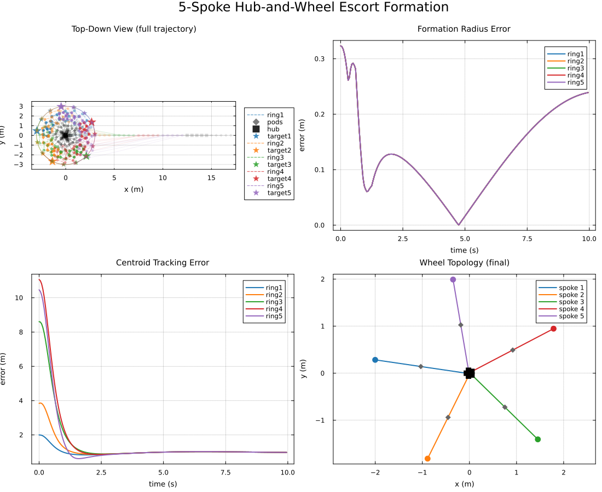
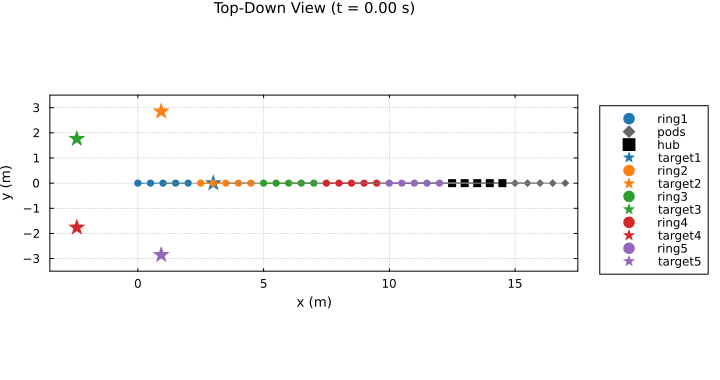

Hub-and-Spoke Wheel Escort Formation
n targets orbit a large circle, each escorted by its own ring of agents. The rings must also stay coordinated with one another, and this page bridges them as a tree: a wheel.
One extra, unanchored hub ring sits at the centre. Each escort ring gets a single-agent support pod, tied to that ring's centroid at one end and to one dedicated hub agent at the other. The hub absorbs all n spokes through n different project(i) indices into its own agents.
The structure matters: no ring or pod is shared between two bridges, since every pod touches exactly one ring and one hub agent. Every node therefore needs only one parent, and the whole thing fits a single NestedSystemSpec. The next page, n_ring_formation.jl, bridges the same rings in a cycle instead – which, as it turns out, neither fits as neatly nor tracks as well.
What to watch for in the result:
- Every pod sits exactly halfway along its own spoke – it has one edge to each end and nothing else pulling on it.
- The hub's agents spread out around a small inner ring instead of collapsing to a point: a real bicycle wheel, with spokes meeting the hub at
ndistinct places. - Rings track their targets closely, but not perfectly. The hub is still one unanchored consensus point shared by every spoke, and the measurement below puts a number on what that costs.
using CellularSheaves
using CellularSheaves.ControlSheaves.NestedSystems
using CellularSheaves.ControlSheaves.NestedDSL
using CellularSheaves.ControlSheaves.AgentControllers
using LinearAlgebra
using Statistics
using Plots
using Printf
# Located from the package root, not `@__DIR__`: while Literate.jl executes a page, `@__DIR__`
# points at the *output* directory rather than at this file. The simulation driver and the
# multi-pin helpers live in `NestedSystems`, already loaded above.
include(joinpath(pkgdir(CellularSheaves), "docs", "literate", "nested", "_plot_helpers.jl"))Main.var"##924".fade_alphaSpec construction, parameterized by n
Targets sit at angle 2π(i-1)/n around a circle of radius R_big; ring i's radius is a safety fraction of the chord between adjacent targets, so that neighbouring rings never overlap as n grows.
escort_radius(n::Int, R_big::Real, m_i::Int, m_max::Int; safety::Real=0.35) =
safety * R_big * sin(pi / n) * (m_i / m_max)
"""
build_wheel_spec(n; m=fill(5, n), R_big=3.0, hub_radius=0.4, safety=0.35, D=4, pin_scheme=:redundant)
Build the `n`-spoke hub-and-wheel specification -- the `NestedDSL` `SystemFragment` it is
written as, the lowered `NestedSystemSpec`, its compiled `SheafTower`, and the agent
index ranges for each ring/hub/pod (into `tower.agent_vertices`, in the order they were added --
ring 1, ..., ring n, hub, pod 1, ..., pod n).
`pin_scheme` mirrors `n_ring_formation.jl`'s: `:redundant` (the default) pins every other agent
around each ring via `NestedSystems.redundant_pin`; `:single` pins only the first agent.
"""
function build_wheel_spec(n::Int; m::Vector{Int}=fill(5, n), R_big::Real=3.0,
hub_radius::Real=0.4, safety::Real=0.35, D::Int=4,
pin_scheme::Symbol=:redundant)
@assert length(m) == n
m_max = maximum(m)
ring_name(i) = Symbol(:ring, i)
pod_name(i) = Symbol(:pod, i)
# One `NestedDSL` fragment, parameterized by `n`. Note `project(hub, i)` on the
# second spoke edge: an endpoint may present *any* `RestrictionSpec`, and here each
# spoke deliberately grabs a different agent of the hub -- which is what makes the hub a
# real wheel hub rather than a single shared point.
fragment = @nested_system begin
@dim D
for i in 1:n
@team $(ring_name(i)) = ring(m[i]; radius=escort_radius(n, R_big, m[i], m_max; safety=safety))
end
@team hub = ring(n; radius=hub_radius)
for i in 1:n
# Single-agent pods use :path -- the only `kind` that accepts `n_agents == 1` (see
# `build_escort_topology`); with one agent there's nothing to internally connect.
@team $(pod_name(i)) = path(1; radius=0.1)
end
for i in 1:n
@target $(Symbol(:t, i))
@link centroid($(ring_name(i))) => $(pod_name(i))
@link $(pod_name(i)) => project(hub, i)
for k in (pin_scheme == :redundant ? (1:2:m[i]) : (1:1))
@observe via($(ring_name(i)), pin_scheme == :redundant ?
redundant_pin(m[i], D, k) : project(1)) => $(Symbol(:t, i))
end
end
end
system = compile_nested_system(fragment)
ring_ranges = [agent_range(system, ring_name(i)) for i in 1:n]
hub_range = agent_range(system, :hub)
pod_ranges = [agent_range(system, pod_name(i)) for i in 1:n]
return fragment, system.spec, system.tower, ring_ranges, hub_range, pod_ranges
end
const N = 5
const M = fill(5, N)
const R_BIG = 3.0
const HUB_RADIUS = 0.4
const D = 4
fragment, spec, tower, ring_ranges, hub_range, pod_ranges = build_wheel_spec(N; m=M, R_big=R_BIG, hub_radius=HUB_RADIUS)
println("Ring radius: ", round(escort_radius(N, R_BIG, M[1], maximum(M)), digits=3), " m ",
" (chord = ", round(2R_BIG * sin(pi / N), digits=3), " m)")Ring radius: 0.617 m (chord = 3.527 m)
A tree, not a cycle – and what that does and doesn't buy
Every pod has exactly two edges and nothing else: one to its ring's centroid, one to a hub agent. This is the "zero-tension follower" mechanism. A node tied to some value x and otherwise unconstrained costs nothing for any value of x, so it simply settles wherever its ties are satisfied – and for two equal-weight ties, that is the midpoint. Directly measurable:
q0 = solve_hierarchical(tower, [[R_BIG * cos(2π * (i - 1) / N), R_BIG * sin(2π * (i - 1) / N), 1.5, 1.0]
for i in 1:N])[end]
ring1_centroid = sum(q0[v] for v in tower.agent_vertices[ring_ranges[1]]) / length(ring_ranges[1])
hub1 = q0[tower.agent_vertices[hub_range[1]]]
pod1 = q0[tower.agent_vertices[pod_ranges[1][1]]]
mid1 = (ring1_centroid .+ hub1) ./ 2
@printf("pod1 = %s\nmidpoint(ring1, hub1) = %s\n", round.(pod1, digits=4), round.(mid1, digits=4))pod1 = [1.5057, -0.0, 1.5, 1.5977]
midpoint(ring1, hub1) = [1.5057, -0.0, 1.5, 1.5977]
That decouples each pod from feeling tension, but it does not decouple the rings from each other. The hub is a single rigid team holding a fixed relative geometry, so underneath, all n spokes pull on one shared D-dimensional hub translation. That is still a real coupling path between rings – just far longer and more diluted than the cycle's direct ring-pod-ring edges. Measured the same way as in n_ring_formation.jl:
"""
target_response_weights(tower, ring_ranges, ring_idx, n) -> Vector{Float64}
The linear response of ring `ring_idx`'s own centroid to a unit displacement of each of the `n`
targets in turn, holding the others fixed at a common base point. Sums to `1` in any
translation-invariant tower.
"""
function target_response_weights(tower::SheafTower, ring_ranges, ring_idx::Int, n::Int)
base = fill([0.0, 0.0, 1.5, 1.0], n)
verts = tower.agent_vertices[ring_ranges[ring_idx]]
ring_centroid(tv) = begin
q = solve_hierarchical(tower, tv)[end]
sum(q[v] for v in verts) / length(verts)
end
c0 = ring_centroid(base)
h = 1.0
return [begin
perturbed = copy(base)
perturbed[j] = base[j] .+ [h, 0.0, 0.0, 0.0]
(ring_centroid(perturbed)[1] - c0[1]) / h
end
for j in 1:n]
end
w = target_response_weights(tower, ring_ranges, 1, N)
@printf("ring1's target-response weights: %s (sum=%.4f)\n", round.(w, digits=4), sum(w))ring1's target-response weights: [0.7425, 0.0695, 0.0592, 0.0592, 0.0695] (sum=1.0000)
Ring 1's own weight comes out around 0.74. For comparison, the cyclic design on the next page manages only 0.6: here the hub's pull is divided among all n branches rather than concentrated in 2 cyclic neighbours, so the response to any one other ring is smaller.
Those cross-weights are also not uniform across ring index: they depend on angular distance around the hub, because the hub's agents sit at fixed offsets around a small rigid ring.
So the tree is a genuinely better topology for this purpose – but not a free one. A tree with a shared, unanchored consensus node is still not the same thing as n independent rings.
Target motion: a rigid n-gon orbiting the big circle
const ω_big, h_alt = 0.3, 1.5
target_traj(i::Int) = t -> [R_BIG * cos(2π * (i - 1) / N + ω_big * t),
R_BIG * sin(2π * (i - 1) / N + ω_big * t), h_alt, 1.0]
target_vel(i::Int) = t -> [-R_BIG * ω_big * sin(2π * (i - 1) / N + ω_big * t),
R_BIG * ω_big * cos(2π * (i - 1) / N + ω_big * t), 0.0, 0.0]
target_acc(i::Int) = t -> [-R_BIG * ω_big^2 * cos(2π * (i - 1) / N + ω_big * t),
-R_BIG * ω_big^2 * sin(2π * (i - 1) / N + ω_big * t), 0.0, 0.0]
target_trajectories = [target_traj(i) for i in 1:N]
target_velocities = [target_vel(i) for i in 1:N]
target_accelerations = [target_acc(i) for i in 1:N]5-element Vector{Main.var"##924".var"#target_acc##0#target_acc##1"{Int64}}:
#target_acc##0 (generic function with 1 method)
#target_acc##0 (generic function with 1 method)
#target_acc##0 (generic function with 1 method)
#target_acc##0 (generic function with 1 method)
#target_acc##0 (generic function with 1 method)Dynamics cascade
Neither the hub nor the pods have a target of their own; both exist purely for structural coordination, so both get a softer gain through a per-child override – the same pattern n_ring_formation.jl applies to its pods alone.
DT, STEPS = 0.05, 200
dyn = QuadrotorDynamics()
Ad, Bd = CellularSheaves.AgentControllers.discrete_matrices(dyn, DT)
Q_lqr = Matrix(Diagonal([500.0, 500.0, 500.0, 150.0, 150.0, 100.0, 100.0, 100.0, 5.0, 5.0]))
R_lqr = Matrix(Diagonal([0.005, 0.005, 0.005]))
K = CellularSheaves.AgentControllers.solve_dare(Ad, Bd, 10 * Q_lqr, R_lqr)
K_soft = CellularSheaves.AgentControllers.solve_dare(Ad, Bd, 2 * Q_lqr, R_lqr)
# Declared in the same language as the topology, in a separate fragment merged onto it: the
# gains only exist once `solve_dare` has run. `nested_bindings` resolves the cascade alone,
# without rebuilding the tower.
bindings = nested_bindings(merge(fragment, @nested_system begin
@bind dynamics=dyn K_lqr=K
@bind hub K_lqr=K_soft
for i in 1:N
@bind $(Symbol(:pod, i)) K_lqr=K_soft
end
end))CellularSheaves.ControlSheaves.NestedSystems.SystemBinding(CellularSheaves.ControlSheaves.AgentControllers.QuadrotorDynamics(9.81, 0.5, 0.01, 0.01), [0.0 0.0 21.166309247170133 0.0 0.0 0.0 0.0 10.52467760470746 0.0 0.0; 0.0 -1.4667218880511848 0.0 2.392340797060175 0.0 0.0 -1.0703393879965992 0.0 0.25550801774491644 0.0; 1.4667218880511848 0.0 0.0 0.0 2.392340797060175 1.0703393879965992 0.0 0.0 0.0 0.25550801774491644], Dict{Symbol, CellularSheaves.ControlSheaves.NestedSystems.SystemBinding}(:pod1 => CellularSheaves.ControlSheaves.NestedSystems.SystemBinding(nothing, [0.0 0.0 21.124325990923666 0.0 0.0 0.0 0.0 10.505796292336779 0.0 0.0; 0.0 -1.4666988342024776 0.0 2.3923102931864766 0.0 0.0 -1.070323556150252 0.0 0.25550559773198644 0.0; 1.4666988342024776 0.0 0.0 0.0 2.3923102931864766 1.070323556150252 0.0 0.0 0.0 0.25550559773198644], Dict{Symbol, CellularSheaves.ControlSheaves.NestedSystems.SystemBinding}(), Dict{Int64, CellularSheaves.ControlSheaves.NestedSystems.AgentBinding}()), :hub => CellularSheaves.ControlSheaves.NestedSystems.SystemBinding(nothing, [0.0 0.0 21.124325990923666 0.0 0.0 0.0 0.0 10.505796292336779 0.0 0.0; 0.0 -1.4666988342024776 0.0 2.3923102931864766 0.0 0.0 -1.070323556150252 0.0 0.25550559773198644 0.0; 1.4666988342024776 0.0 0.0 0.0 2.3923102931864766 1.070323556150252 0.0 0.0 0.0 0.25550559773198644], Dict{Symbol, CellularSheaves.ControlSheaves.NestedSystems.SystemBinding}(), Dict{Int64, CellularSheaves.ControlSheaves.NestedSystems.AgentBinding}()), :pod4 => CellularSheaves.ControlSheaves.NestedSystems.SystemBinding(nothing, [0.0 0.0 21.124325990923666 0.0 0.0 0.0 0.0 10.505796292336779 0.0 0.0; 0.0 -1.4666988342024776 0.0 2.3923102931864766 0.0 0.0 -1.070323556150252 0.0 0.25550559773198644 0.0; 1.4666988342024776 0.0 0.0 0.0 2.3923102931864766 1.070323556150252 0.0 0.0 0.0 0.25550559773198644], Dict{Symbol, CellularSheaves.ControlSheaves.NestedSystems.SystemBinding}(), Dict{Int64, CellularSheaves.ControlSheaves.NestedSystems.AgentBinding}()), :pod2 => CellularSheaves.ControlSheaves.NestedSystems.SystemBinding(nothing, [0.0 0.0 21.124325990923666 0.0 0.0 0.0 0.0 10.505796292336779 0.0 0.0; 0.0 -1.4666988342024776 0.0 2.3923102931864766 0.0 0.0 -1.070323556150252 0.0 0.25550559773198644 0.0; 1.4666988342024776 0.0 0.0 0.0 2.3923102931864766 1.070323556150252 0.0 0.0 0.0 0.25550559773198644], Dict{Symbol, CellularSheaves.ControlSheaves.NestedSystems.SystemBinding}(), Dict{Int64, CellularSheaves.ControlSheaves.NestedSystems.AgentBinding}()), :pod3 => CellularSheaves.ControlSheaves.NestedSystems.SystemBinding(nothing, [0.0 0.0 21.124325990923666 0.0 0.0 0.0 0.0 10.505796292336779 0.0 0.0; 0.0 -1.4666988342024776 0.0 2.3923102931864766 0.0 0.0 -1.070323556150252 0.0 0.25550559773198644 0.0; 1.4666988342024776 0.0 0.0 0.0 2.3923102931864766 1.070323556150252 0.0 0.0 0.0 0.25550559773198644], Dict{Symbol, CellularSheaves.ControlSheaves.NestedSystems.SystemBinding}(), Dict{Int64, CellularSheaves.ControlSheaves.NestedSystems.AgentBinding}()), :pod5 => CellularSheaves.ControlSheaves.NestedSystems.SystemBinding(nothing, [0.0 0.0 21.124325990923666 0.0 0.0 0.0 0.0 10.505796292336779 0.0 0.0; 0.0 -1.4666988342024776 0.0 2.3923102931864766 0.0 0.0 -1.070323556150252 0.0 0.25550559773198644 0.0; 1.4666988342024776 0.0 0.0 0.0 2.3923102931864766 1.070323556150252 0.0 0.0 0.0 0.25550559773198644], Dict{Symbol, CellularSheaves.ControlSheaves.NestedSystems.SystemBinding}(), Dict{Int64, CellularSheaves.ControlSheaves.NestedSystems.AgentBinding}())), Dict{Int64, CellularSheaves.ControlSheaves.NestedSystems.AgentBinding}())Run the closed-loop simulation with full feedforward
prob = NestedEscortProblem(tower, bindings, target_trajectories;
target_velocities=target_velocities,
target_accelerations=target_accelerations,
dt=DT, steps=STEPS)
res = run_nested_escort_simulation(prob; use_feedforward=true)
time_grid = 0:DT:(STEPS*DT)0.0:0.05:10.0Diagnostics: per-ring formation and tracking error over time
form_err = [zeros(STEPS) for _ in 1:N]
track_err = [zeros(STEPS) for _ in 1:N]
ring_radius = [escort_radius(N, R_BIG, M[i], maximum(M)) for i in 1:N]
for step in 1:STEPS
t = time_grid[step]
for i in 1:N
positions = [res.sim_data[step][a][1:3] for a in ring_ranges[i]]
c = sum(positions) / length(positions)
form_err[i][step] = sum(abs(norm(p .- c) - ring_radius[i]) for p in positions) / length(positions)
track_err[i][step] = norm(c[1:2] .- target_trajectories[i](t)[1:2])
end
endPlots
cs = palette(:tab10)
ring_color(i) = cs[mod1(i, 10)]
# Panel 1 and the animated version below both need consistent axis limits -- computed once, from
# every agent and target position across the whole run.
all_x = Float64[]; all_y = Float64[]
for rngs in (ring_ranges, pod_ranges), rng in rngs, a in rng, step in 1:STEPS
push!(all_x, res.sim_data[step][a][1]); push!(all_y, res.sim_data[step][a][2])
end
for a in hub_range, step in 1:STEPS
push!(all_x, res.sim_data[step][a][1]); push!(all_y, res.sim_data[step][a][2])
end
for traj in target_trajectories, t in time_grid[1:STEPS]
p = traj(t)
push!(all_x, p[1]); push!(all_y, p[2])
end
const TOPDOWN_XLIM = (minimum(all_x) - 0.5, maximum(all_x) + 0.5)
const TOPDOWN_YLIM = (minimum(all_y) - 0.5, maximum(all_y) + 0.5)
# Panel 1 proper: a composite of the whole run, in the same style as the other examples in this
# section -- full agent paths drawn thin and faint, ring/hub outlines and spokes drawn at sparse
# snapshots fading faint-to-solid.
function top_down_composite(; n_snapshots::Int=8)
snaps = snapshot_steps(STEPS, n_snapshots)
p = plot(title="Top-Down View (full trajectory)", aspect_ratio=1,
xlabel="x (m)", ylabel="y (m)", xlims=TOPDOWN_XLIM, ylims=TOPDOWN_YLIM,
legend=:outertopright)
for i in 1:N
for a in ring_ranges[i]
px = [res.sim_data[s][a][1] for s in 1:STEPS]
py = [res.sim_data[s][a][2] for s in 1:STEPS]
plot!(p, px, py, color=ring_color(i), alpha=0.1, linewidth=1, label="")
end
for (si, s) in enumerate(snaps)
a = fade_alpha(si, length(snaps))
fx = [res.sim_data[s][v][1] for v in ring_ranges[i]]
fy = [res.sim_data[s][v][2] for v in ring_ranges[i]]
plot!(p, [fx; fx[1]], [fy; fy[1]], color=ring_color(i), linestyle=:dash, alpha=a,
label=(s == snaps[end] ? "ring$i" : ""))
scatter!(p, fx, fy, color=ring_color(i), markersize=3, alpha=a, label="")
pod_v = only(pod_ranges[i])
hub_v = hub_range[i]
px_, py_ = res.sim_data[s][pod_v][1], res.sim_data[s][pod_v][2]
hx_, hy_ = res.sim_data[s][hub_v][1], res.sim_data[s][hub_v][2]
rcx = sum(fx) / length(fx); rcy = sum(fy) / length(fy)
plot!(p, [rcx, px_, hx_], [rcy, py_, hy_], color=:gray50, linewidth=1, alpha=a * 0.7, label="")
scatter!(p, [px_], [py_], color=:gray40, markersize=3, marker=:diamond, alpha=a,
label=(i == 1 && s == snaps[end] ? "pods" : ""))
scatter!(p, [hx_], [hy_], color=:black, markersize=3, marker=:square, alpha=a,
label=(i == 1 && s == snaps[end] ? "hub" : ""))
end
tp = [target_trajectories[i](t) for t in time_grid[1:STEPS]]
plot!(p, [q[1] for q in tp], [q[2] for q in tp], color=ring_color(i), linestyle=:dot, alpha=0.5, label="")
for (si, s) in enumerate(snaps)
pt = target_trajectories[i](time_grid[s])
a = fade_alpha(si, length(snaps))
scatter!(p, [pt[1]], [pt[2]], marker=:star5, markersize=(s == snaps[end] ? 9 : 5),
color=ring_color(i), alpha=a, label=(s == snaps[end] ? "target$i" : ""))
end
end
return p
end
p1 = top_down_composite()
# The animated version reuses the same per-step rendering in miniature.
function top_down_frame(step::Int)
t = time_grid[step]
p = plot(title=@sprintf("Top-Down View (t = %.2f s)", t), aspect_ratio=1,
xlabel="x (m)", ylabel="y (m)", xlims=TOPDOWN_XLIM, ylims=TOPDOWN_YLIM,
legend=:outertopright)
for i in 1:N
fx = [res.sim_data[step][a][1] for a in ring_ranges[i]]
fy = [res.sim_data[step][a][2] for a in ring_ranges[i]]
scatter!(p, fx, fy, color=ring_color(i), markersize=4, label="ring$i")
plot!(p, [fx; fx[1]], [fy; fy[1]], color=ring_color(i), linestyle=:dash, label="")
pod_v = only(pod_ranges[i]); hub_v = hub_range[i]
px_, py_ = res.sim_data[step][pod_v][1], res.sim_data[step][pod_v][2]
hx_, hy_ = res.sim_data[step][hub_v][1], res.sim_data[step][hub_v][2]
rcx = sum(fx) / length(fx); rcy = sum(fy) / length(fy)
plot!(p, [rcx, px_, hx_], [rcy, py_, hy_], color=:gray50, linewidth=1, alpha=0.7, label="")
scatter!(p, [px_], [py_], color=:gray40, markersize=4, marker=:diamond, label=(i == 1 ? "pods" : ""))
scatter!(p, [hx_], [hy_], color=:black, markersize=4, marker=:square, label=(i == 1 ? "hub" : ""))
tp = [target_trajectories[i](tt) for tt in time_grid[1:step]]
plot!(p, [q[1] for q in tp], [q[2] for q in tp], color=ring_color(i), linestyle=:dot, alpha=0.5, label="")
pt = target_trajectories[i](t)
scatter!(p, [pt[1]], [pt[2]], marker=:star5, markersize=9, color=ring_color(i), label="target$i")
end
return p
end
# Panel 2: per-ring formation radius error.
p2 = plot(title="Formation Radius Error", xlabel="time (s)", ylabel="error (m)")
for i in 1:N
plot!(p2, time_grid[1:STEPS], form_err[i], color=ring_color(i), label="ring$i", linewidth=2)
end
# Panel 3: per-ring centroid tracking error -- the ~26% (own weight ~0.74, not 1.0) that the hub's
# shared consensus leaves on the table, per the measurement above.
p3 = plot(title="Centroid Tracking Error", xlabel="time (s)", ylabel="error (m)")
for i in 1:N
plot!(p3, time_grid[1:STEPS], track_err[i], color=ring_color(i), label="ring$i", linewidth=2)
end
# Panel 4: the wheel itself at the final snapshot -- ring centroids, pods, and hub agents
# connected as spokes, making the "spokes meet the hub at different points" claim from the intro
# directly visible.
p4 = plot(title="Wheel Topology (final)", aspect_ratio=1, xlabel="x (m)", ylabel="y (m)")
for i in 1:N
rc = sum(res.sim_data[STEPS][v][1:2] for v in ring_ranges[i]) / length(ring_ranges[i])
pod_v = only(pod_ranges[i]); hub_v = hub_range[i]
pc = res.sim_data[STEPS][pod_v][1:2]
hc = res.sim_data[STEPS][hub_v][1:2]
plot!(p4, [rc[1], pc[1], hc[1]], [rc[2], pc[2], hc[2]], color=ring_color(i), linewidth=2,
label="spoke $i")
scatter!(p4, [rc[1]], [rc[2]], color=ring_color(i), markersize=6, label="")
scatter!(p4, [pc[1]], [pc[2]], color=:gray40, marker=:diamond, markersize=5, label="")
scatter!(p4, [hc[1]], [hc[2]], color=:black, marker=:square, markersize=5, label="")
end
plot(p1, p2, p3, p4, layout=(2, 2), size=(1100, 900),
plot_title="$N-Spoke Hub-and-Wheel Escort Formation")
How closely the rings hold their targets, averaged over the settled part of the run:
@printf("Mean steady-state tracking error (last 20%% of run): %.3f m (ring radius = %.3f m)\n",
sum(mean(track_err[i][round(Int, 0.8STEPS):end]) for i in 1:N) / N, ring_radius[1])Mean steady-state tracking error (last 20% of run): 0.993 m (ring radius = 0.617 m)
Animated top-down view
anim = @animate for step in 1:4:STEPS
top_down_frame(step)
end
gif(anim, "wheel_formation_top_down.gif", fps=10)Plots.AnimatedGif("/home/runner/work/CellularSheaves.jl/CellularSheaves.jl/docs/src/generated/nested/wheel_formation_top_down.gif")
println("Hub-and-spoke wheel escort formation example complete.")Hub-and-spoke wheel escort formation example complete.